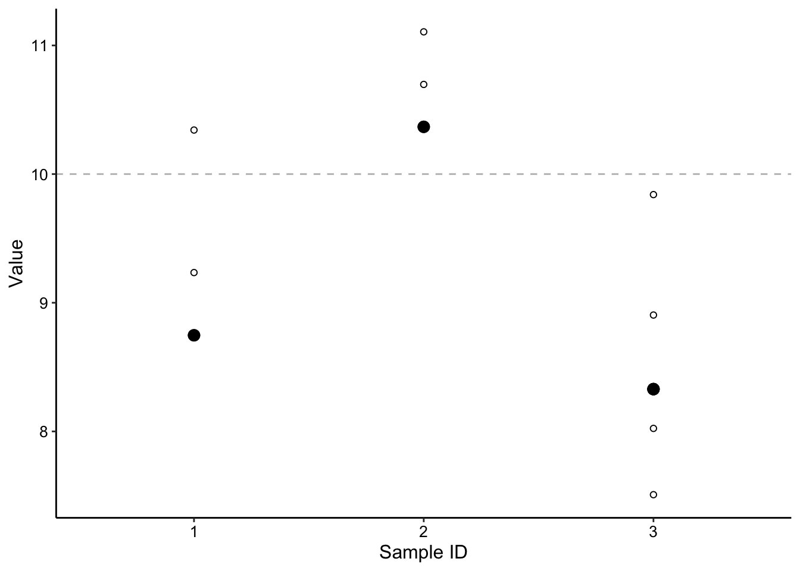
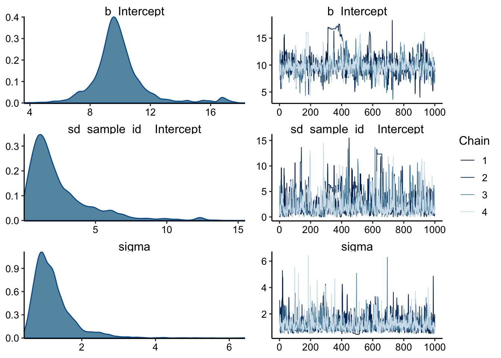

In this notebook we are going to learn a little bit about Brms, which is a package written for R. Brms can do a lot…it is essentially a wrapper for a sophisticated C style language called Stan to perform Bayesian inference. Many of those words may have just scared you, but take a deep breath and read on!
My goal in writing this tutorial is to give people a few simple examples to get started performing statistics on hierarchical data. To be a pro at this stuff requires serious dedication, and honestly, we all just want it to be easy! Here I’ll try to do just that - give you enough to get your answer, but no more…no theory, just the simplest version of the ideas you need to know to perform this kind of analysis. Disclaimer: I’m no expert either, so we’re learning together. I think my novice level may help me reach people at the same level, but that also means I have a lot left to learn. Please understand, and let me know how I can improve!
You may find yourself here because you’ve already realized your data has a hierarchy. It’s probably true, because tons of data we collect in biology is naturally hierarchical. Let’s start with a simple example - you acquire data on biological triplicates where each biological sample is measured three times (technical triplicate), so you have 9 datapoints in a hierarchy.
This type of hierarchy could apply to many different scenarios. For example, data from biological triplicates collected on three different days or three parallel cultures from three clonal colonies. In all of these scenarios there is a parameter that you are trying to estimate that should determine the values you measure within each of your groups.
At this point you may be asking yourself, “What is the advantage of modeling the hierarchy vs. pooling all the values?” We will walk through some specific examples, but consider the asymmetric hierarchy in the next section. What would pooling all of the values would do in that scenario. It would bias our estimate of the true value to sample 3. We could balance this by throwing away observations…but instead we could just take the hierarchical structure into account.
In order to understand the parameter estimates we are going to get from our hierarchical analysis, we need to think about how the model is getting from the “True Value” to the observed values at bottom of the hierarchy. In many cases, we are simply trying to estimate the mean value of some phenomenon, and in many cases we can reasonably assume that the data were generated from a Normal probability distribution (i.e. Bell curve or Gaussian). Therefore we might have a hierarchy that looks like this:
Here you can see that we started with a True Value and use that as the mean of a normal distribution. We drew our three samples from that distribution. Then we created normal distributions using each of the three samples as the mean and we drew the observed values from each of those distributions. So, what parameters would a model for this hierarchy estimate?
We could rewrite this model in shorthand like this:
\[Sample \sim Normal(\text{True Value}, a)\] \[Vals \sim Normal(Sample, b)\]
Often, you may only be interested in the “True Value,” but inherently the hierarchical model will explicit estimate all of the parameters…which could always prove useful. Ok, now let’s try to fit a model to a dataset that conforms to the hierarchy shown above.
Before we jump in let’s setup brms.
To perform this example, all you need is to have R installed and running and type install.packages('brms'). That’s it - with that one command you should have all the complicated dependencies etc needed to do hierarchical bayesian statistics…pretty cool.
Ok, so then we just need to tell R that we’re going to use brms:
library(brms)Good job - setup complete!
The first thing we need to fit our model is some data. Let’s generate some data that looks like the asymetrical hierarchy shown above.
set.seed(1)
df <- tibble(sample_id = c(1, 2, 3), sample_param = rnorm(n = 3,
mean = 10, sd = 2)) %>% group_by(sample_id) %>% mutate(obs_1 = rnorm(n = 1,
mean = sample_param, sd = 1)) %>% mutate(obs_2 = rnorm(n = 1,
mean = sample_param, sd = 1)) %>% mutate(obs_3 = if (sample_id ==
3) rnorm(n = 1, mean = sample_param, sd = 1)) %>% mutate(obs_4 = if (sample_id ==
3) rnorm(n = 1, mean = sample_param, sd = 1)) %>% gather(key = obs_num,
value = obs_val, obs_1, obs_2, obs_3, obs_4) %>% drop_na()
df %>% kable() %>% kable_styling()| sample_id | sample_param | obs_num | obs_val |
|---|---|---|---|
| 1 | 8.747092 | obs_1 | 10.342373 |
| 2 | 10.367287 | obs_1 | 10.696794 |
| 3 | 8.328743 | obs_1 | 7.508274 |
| 1 | 8.747092 | obs_2 | 9.234521 |
| 2 | 10.367287 | obs_2 | 11.105611 |
| 3 | 8.328743 | obs_2 | 8.904524 |
| 3 | 8.328743 | obs_3 | 8.023354 |
| 3 | 8.328743 | obs_4 | 9.840524 |
Ok, so we have our small dataset here, that we’ve generated from normal distributions as shown above. Note that in this case the “True Value” was 10. Here’s what the dataset looks like graphically:
ggplot(df, aes(x = factor(sample_id), y = obs_val)) + geom_hline(yintercept = 10,
linetype = 2, color = "gray") + geom_point(shape = 21) +
geom_point(aes(y = sample_param), size = 3) + labs(y = "Value",
x = "Sample ID")
You can see the true value as the dotted line. The Sample mean parameters are the filled circles and the observed values are the open circles. Now let’s give brms only the observed values and see how it does.
The function we will use is just called brm() and the hardest thing we need to provide is the “formula”. This will be an R style formula and may not be familiar to people, but don’t worry about it for now.
Our formula is simply obs_val ~ 1. This means the observed value depends only on an “intercept” - in this case the intercept is just the mean value and specifically it’s the “True Value”. The hierarchy is added to the model with obs_val ~ 1 + (1 | sample_id). This syntax can be translated to (parameter | group), so in this case the intercept is also grouped by sample_id - each sample has a mean. Finally, the function brm actually defaults that the observed data comes from a normal distribution, so we don’t even need to define that level of the hierarchy.
Let’s try it! Warning: this code may take a minute to run.
mod_1 <- brm(formula = obs_val ~ 1 + (1 | sample_id), data = df,
file = "mod_1")Woah! A lot just happened there. You should see a bunch of output talking about chains and iterations. That output comes from the Stan language that underlies what we are doing with brms. Stan must be compiled, so that often takes ~1min, but it’s worth it. To fit these models is computationally challenging, and Stan is implemented to run as fast as possible…so just sit back and relax.
Now - what just happened? Stan basically just uncovered what the probability distribution was for each parameter by sampling a bunch of times and checking how close it was to explaining the data. We can see this sampling process from the chains:
plot(mod_1)
On the right you should see the paths that each of the four chains is taking through this probability space as it tries to find the best fit for your data. We can then look at the distributions of these sampled values on the left. The parameters displayed here are “b Intercept”, that’s our “True Value”. Then there’s “sd sample id Intercept” that’s our sd = a. Then there’s ‘sigma’ which is our sd = b.
These plots on the left are called ‘posterior distributions’ and they are the probability estimates for our parameters. Let’s look at a summary of the model:
summary(mod_1)## Family: gaussian
## Links: mu = identity; sigma = identity
## Formula: obs_val ~ 1 + (1 | sample_id)
## Data: df (Number of observations: 8)
## Samples: 4 chains, each with iter = 2000; warmup = 1000; thin = 1;
## total post-warmup samples = 4000
##
## Group-Level Effects:
## ~sample_id (Number of levels: 3)
## Estimate Est.Error l-95% CI u-95% CI Eff.Sample Rhat
## sd(Intercept) 2.44 2.25 0.12 8.87 227 1.01
##
## Population-Level Effects:
## Estimate Est.Error l-95% CI u-95% CI Eff.Sample Rhat
## Intercept 9.91 1.81 6.90 15.67 104 1.03
##
## Family Specific Parameters:
## Estimate Est.Error l-95% CI u-95% CI Eff.Sample Rhat
## sigma 1.22 0.55 0.57 2.65 989 1.00
##
## Samples were drawn using sampling(NUTS). For each parameter, Eff.Sample
## is a crude measure of effective sample size, and Rhat is the potential
## scale reduction factor on split chains (at convergence, Rhat = 1).